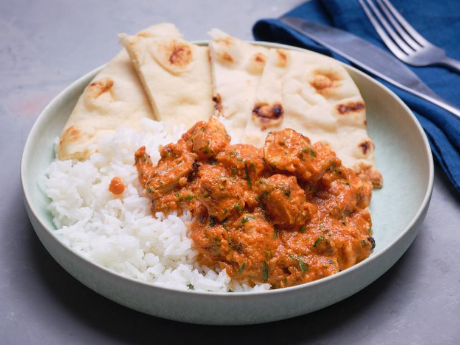

Butter Chicken
Home

Description
Ingredients
Chicken Marinade
- 1 1/4 cup whole milk yogurt
- 4 teaspoons kosher salt
- 1 tablespoon finely grated ginger
- 2 cloves garlic, finely grated
- 8 boneless skinless chicken thighs (about 2 1/2 pounds)
Sauce
- 6 tablespoons unsalted cultured butter (see Cook's Note)
- 1 teaspoon fenugreek seeds
- 2 bay leaves
- 2 green cardamom pods, cracked
- One 3-inch cinnamon stick
- 1 whole clove
- 1 large onion, sliced
- Kosher salt
- 1 tablespoon finely grated ginger
- 4 cloves garlic, finely grated
- 1 1/2 teaspoons garam masala
- 1 teaspoon Kashmiri red chili powder (see Cook's Note)
- One 28-ounce can whole peeled tomatoes
- 1/3 cup heavy cream
- Chopped cilantro leaves and tender stems, for serving
- Basmati rice, for serving
- Naan, for serving
Steps
- For the marinade: Whisk together the yogurt, salt, ginger and garlic in a large bowl until combined. Toss the chicken in the seasoned yogurt marinade until evenly coated. Wrap tightly with plastic wrap and refrigerate at least 3 hours and up to 24. (Overnight works best.)
- For the sauce: Melt 4 tablespoons of the butter in a large Dutch oven or wide heavy pot over medium heat. Toss the fenugreek seeds, bay leaves, cardamom, cinnamon and clove in the butter and cook, stirring occasionally, until slightly darker and very fragrant, 1 to 2 minutes. Add the onions, season with 1 teaspoon salt and cook, stirring occasionally, until the onions are golden and beginning to caramelize, 8 to 10 minutes. Add the ginger and garlic and cook, stirring, until very fragrant and the ginger starts to turn golden and sticks to the bottom of the pot, 2 to 3 minutes. Add the garam masala and chili powder and cook, stirring occasionally, until very fragrant, about 1 minute. Add the tomatoes, breaking them up into pieces with a spoon, and bring to a boil. Reduce to a simmer and cook uncovered, stirring occasionally, until the sauce has reduced by half and the tomatoes are very tender, about 30 minutes. Discard the bay leaves and cinnamon stick (but leave the other whole spices).
- Let the hot sauce cool for about 5 minutes or so, then transfer it to a blender filling no more than halfway. Remove the center cap from the lid and place it on the blender. Cover the lid with a kitchen towel to catch splatters, and pulse until smooth. (If your blender is small, you may need to work in batches.) Add the remaining 2 tablespoons butter and the cream to the blender and puree until creamy. Pour into a clean pot and bring to a simmer. Season with salt.
- Meanwhile, arrange a rack directly under the broiler and preheat to high. Line a rimmed baking sheet with foil and set a wire rack inside.
- Arrange the chicken in a single layer on the rack. Broil until the chicken starts to brown in spots, 3 to 6 minutes per side (it will not be cooked through). Remove from the broiler. When cool enough to handle, cut the chicken into 1-inch pieces. Add the chicken to the simmering sauce, cover and cook until the chicken is cooked through, 8 to 10 minutes.
- Stir in the cilantro. Serve with rice and naan alongside.